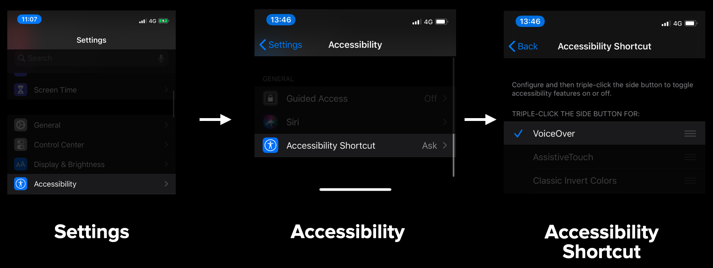

Clone the repo
Build & run the Xcode project
Put the PitchBlack app on your homescreen
Enable Accessibliity Shortcut
- Go to Settings > Accessibility > Accessibility Shortcut
- Select VoiceOver
- 
Clone the repo
Build & run the Xcode project
Put the PitchBlack app on your homescreen

Enable Accessibliity Shortcut
This is the accompanying app for AppBuilder 2020, talk UI Mode: Pitch Black.